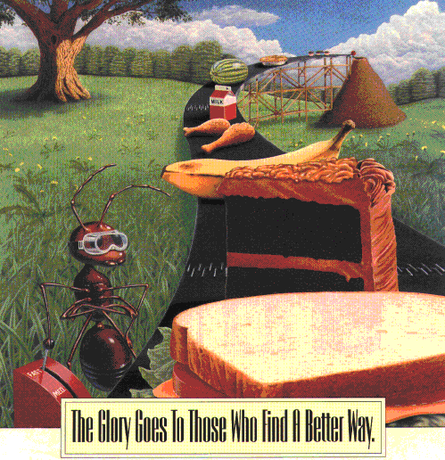

LINKS
Useful non-comprehensive list of links to databases, resources, protocols, programs and information related to bioinformatics and molecular biology.
TABLE OF CONTENTS
• Retrieval systems
• Database searching with heuristic programs
• Swiss Institute of Bioinformatics databases
• Single nucleotide polymorphism (SNP) databases
• Sequences-function analysis tools
• Classification of protein molecules
• Databases of orthologous genes
2. Genome Databases and Resources
• Molecular and informatics servers
• General indices
• Databases and resources for plants
• Databases and resources for other organisms
• DNA content databases
4. Additional Biological Resources
5. Metabolic Pathways and Structural Biology
• Taxonomical resources
• Phylogenetic resources
• Important analysis programs
9. Molecular Biology Resources
11. General and Historical Reference

___________________________________________________________________________________
SEQUENCE DATABASES
Retrieval systems
1. Sequence Retrieval System (SRS): European Bioinformatics Institute, Sanger Center
2. NCBI database: ENTREZ suite, GenBank database, Computational molecular biology at NIH
3. GenomeNet (Kyoto and Tokyo Univ.): DBGET/LinkDB
4. EMBL database: EMBL Germany
Database searching with heuristic programs
1. BLAST. Download from FTP site (ftp://ncbi.nlm.nih.gov/blast/)
2. FASTA. Download from FTP site (ftp://ftp.virginia.edu/pub/fasta)
Swiss Institute of Bioinformatics databases
1. ExPASy molecular biology server
2. SWISS-PROT protein database
Single nucleotide polymorphism (SNP) databases
1. dbSNP: a Database of Human Genetic Variation
2. TIGR AT database
3. University of Minnesota plant database
Sequence-function analysis tools
1. Assigning protein function with PROSITE
2. Motif libraries: BLOCKS and PRINTS
3. PFAM database for domain arrangement of proteins
4. PSORT for targeting signals
Classification of protein molecules
1. PDB: protein database
2. PIR superfamily
3. SCOP: structural classification of proteins
4. CATH: structural classification of proteins
5. PEDANT database
6. ProtoMap database
Databases of orthologous genes
1. COG
2. MBGD
___________________________________________________________________________________
GENOME DATABASES AND RESOURCES
Molecular and informatics servers
1. Sequence Retrieval System (SRS)
2. European Bioinformatics Institute (EBI)
3. European Molecular Biology Laboratory (EMBL)
4. ExPASy Molecular Biology Server
5. The Institute for Genomic Research (TIGR) database
6. Genomic Resources at Stanford University
7. GenomeNet server at Kyoto University
8. Protein Information Resource (PIR)
9. National Center for Biotechnology Information (NCBI)
10. National Center for Genome Resources (NCGR)
11. Biology Workbench (NCSA)
General indices
1. Bioinformatics Hypermedia Service (ANU), Australia
2. Harvard Biological Laboratories
3. Human genome project DOE site
Databases and resources for plants
1. Plant Genome Data and Information Center, NAL
2. Computational Biology Centers, Univ. of Minnesota
3. TAIR: Arabidopsis thaliana database and resources
4. Arabidopsis Stock Centre at Nottingham (NASC), UK
5. Lehle Seeds: Everything Arabidopsis
6. Chlamydomonas Genetics Center, Duke University
7. BeanGenes: Phaseolus and Vigna database, NDSU
8. BeanRef: Phaseolus and Vigna references, Italy
9. CottonDB: data collection site, TAMU
10. Dendrome: Genome Database for forest trees, USDA
11. GrainGenes: Database for small grains and sugarcane, USDA
12. Maize Genetic Database, Missouri
13. Maize Genetic Cooperation - Stock center, UIUC
14. Soybase: Soybean database, ISU
15. Snapdragon database
16. RiceGAAS: Rice genome annotation database
Databases and resources for other organisms
1. GenBank, NCBI
2. SGD - Saccharomyces genome database, Stanford
3. Animal Genome Database, Japan
4. BovMAP bovine database, France
5. Danish Centre for Human Genome Research
6. Human Genome Database (GDB) at Johns Hopkins University
7. Human genome project at DOE
8. Human Chromosome X, Max Planck Institut
9. Mouse Genome Database (MGD)
10. Dog Genome Project, Berkeley
11. Pig and Chicken Gene Mapping at ISU
12. Poultry Gene Mapping at MSU
13. Genome Sequence Database (GSDB), NCGR
14. Horse Genetics at UC Davis
15. UNE Animal Science Web Server, Australia
16. Cattle Genetics in the Laboratory of Immmunogenetics, UIUC
17. Meat Animal Research Center (MARC) at USDA
18. Online Mendelian Inheritance in Animals (OMIA), Australia
19. Online Mendelian Inheritance in Man (OMIM), NCBI
20. Genome Mapping - Roslin Institute, UK
21. AaeDB - Aedes aegypti, CSU
22. FlyBase - Drosophila, Harvard
23. Medfly - Ceratitis capitata, Belgium
24. Mosquito genomics server, CSU
DNA content databases
1. DNA content of plants from Kew gardens
2. DNA content of animals
3. DOGS: database of genome size
___________________________________________________________________________________
RNA DATABASES
1. European rRNA database server
2. RNAbase: RNA structure database
3. 5S rRNA databank
4. SRPDB database
5. RNase P database
6. ITS rRNA database
7. paRNAss database
___________________________________________________________________________________
ADDITIONAL BIOLOGICAL RESOURCES
1. American Type Culture Collection (ATCC)
2. World Data Centre for Microorganisms (WDCM)
3. Escherichia coli stock center, Yale University
4. Germplasm Resources Information Network (GRIN), USDA
5. VectorDB: Vectors for molecular biology
___________________________________________________________________________________
METABOLIC PATHWAYS AND STRUCTURAL BIOLOGY
1. Kyoto Encyclopedia of Genes and Genome (KEGG and LIGAND)
2. Metabolic pathways in Escherichia coli (EcoCyc)
3. Klotho database of 3D structures of small molecules
___________________________________________________________________________________
PHYLOGENETIC RESOURCES
Taxonomical Resources
1. The Tree of Life project
2. w3TROPICOS from the Missouri Botanical Garden
Phylogenetic Resources
1. TreeBase
Important Analysis Programs
1. GCG package
2. PAUP
3. PHYLIP
4. Hennig86
5. MacClade
6. MEGA/METREE
7. GAMBIT
___________________________________________________________________________________
PATENT DATABASES
1. Issued patents from the US Patent Office
2. USDA database of Biotechnology Patents
___________________________________________________________________________________
BOTANICAL REFERENCES
1. AdDB page from the US National Agriculture Library (agriculture-related information)
2. Links from the American Society of Plant Physiologists (ASPP)
3. Botany Virtual Library of the University of Oklahoma
4. Florin Information System botanical diversity site
6. Botanical Inernet Directory
___________________________________________________________________________________
MOLECULAR BIOLOGY RESOURCES
___________________________________________________________________________________
TEACHING RESOURCES
1. Using the fern Ceratopteris as a teaching tool
___________________________________________________________________________________
GENERAL AND HISTORICAL REFERENCE
1. Profiles in science
2. Making PCR: an homage
3. Artful science: MicroAngela microscopy
___________________________________________________________________________________
Gustavo Caetano-Anollés Lab - Evolutionary Bioinformatics at UIUC
GCA Lab / Research / Resources / Publications / Courses / Lab Members / Links